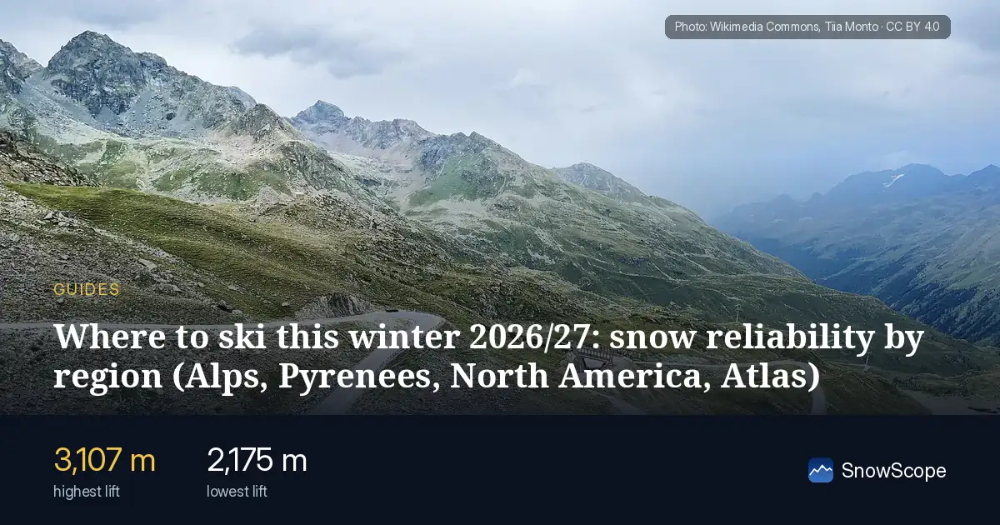
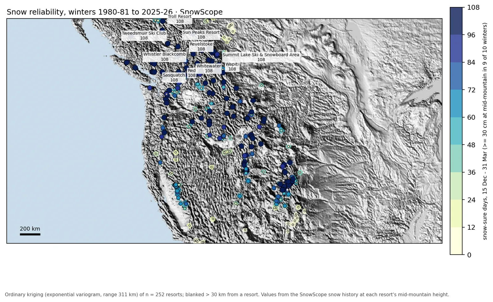

Where to ski this winter 2026/27: snow reliability by region (Alps, Pyrenees, North America, Atlas)
Some resorts hold snow nearly every winter; others rely on luck. We studied snow depth at mid-mountain across 46 past winters (1980-81 to 2025-26) and counted how many days from 15 December to 31 March had at least 30 cm in 9 winters out of 10. That tells you where to book for certainty.
See the live snow forecast for Kaunertaler Gletscher in the SnowScope appSnow depth, powder alerts and the 3D map, free.
What counts as snow-sure
The core ski season runs for 108 days. A resort earns 'snow-sure' status if it has at least 30 cm at mid-mountain on that many days in 9 of 10 past winters. We also track 'typical days': at least 30 cm in half of the winters. These numbers come from our snow history—a record of past snow depth corrected for height—not from resort reports or guesses.
Height matters. Higher resorts tend to have more snow-sure days. So do glaciers and north-facing slopes, which hold snow longer when spring arrives.

Alps: the most reliable region
Of 1,178 Alpine resorts we studied, 211 have at least 90 snow-sure days. That is the strongest story in Europe. The highest reliables—Kaunertaler Gletscher and Jungfraujoch Snow Fun Park—both reach 108 days, meaning at least 30 cm at mid-mountain almost every winter.
February is the peak snow month across the Alps, with a typical mid-mountain depth of 48 cm. The median Alpine resort has 92 typical days (meaning half of past winters had 30 cm or more for that many days). La Grave and Mölltaler Gletscher also tick both boxes: 108 snow-sure and 108 typical days.

Pyrenees: thinner snow, fewer guarantees
None of the 53 Pyrenean resorts we looked at reach 90 snow-sure days. The most reliable, Ordino-Arcalis, has 64 snow-sure days—good, but not guaranteed. Cauterets Cirque du Lys reaches 39 snow-sure days; Formigal and Gourette sit below 30.
February remains the strongest month (49 cm typical at mid-mountain), but the median resort has only 67 typical days. If you pick a Pyrenean resort, choose one that sits high, faces north, or has a glacier. Book late in the season and check the live snow map close to your trip.

US West: high reliability, March peaks
Of 195 US West resorts, 77 have 90 or more snow-sure days. The median resort holds 72 snow-sure days, which is solid. The top four—Mt. Bachelor, Crystal Mountain, Stevens Pass, and Mt Baker—all reach 108, plus 108 typical days each.
March is the deepest month in the US West, with 124 cm typical at mid-mountain. The median resort has 108 typical days, meaning you can count on decent snow in half of all winters. The US West leads the world in snow reliability.
Western Canada: short season, high totals
Of 57 Canadian resorts, 38 have 90 or more snow-sure days. The median here is exceptionally high: 108 snow-sure days and 108 typical days. Sasquatch, Whistler Blackcomb, Mount Cain Alpine Park, and Ski Callaghan all deliver the full 108 days of snow certainty.
March is the peak month with 92 cm typical at mid-mountain. These resorts often close by early April, so the season is shorter than the Alps, but snow is reliably deep while it lasts.
US Northeast and Morocco: snow is rarer
None of 111 US Northeast resorts reach 90 snow-sure days. The best—Saddleback Mountain—has 79 snow-sure days. The median has 0, and the median typical days are only 63. February peaks at 41 cm. Early-season trips (before Christmas) are risky; late-February ski breaks offer the best odds.
In the Atlas mountains of Morocco, we looked at 3 resorts. Oukaimden, the highest at 3,204 m, has 81 typical days but 0 snow-sure days. Snow there is thin and unreliable. If you plan a Moroccan ski trip, go in January or February and watch the map closely.
Tips for skiers
- Book early-season trips (before Christmas) only at high, glaciated, north-facing resorts with 90+ snow-sure days. Lower resorts need winter snow to arrive first.
- February is the safest month for most regions; March holds the deepest snow at high altitude in North America.
- In the Pyrenees, US Northeast, and Atlas, watch the live SnowScope map and book late—snow can arrive late or melt fast, so near-trip decisions work better than advance bookings.
- Lower, cheaper resorts deliver great value in generous winters: use the map to spot them when snow is falling.
- Before any off-piste day, check the official avalanche bulletin for your region, even at resorts with long snow histories.
About these numbers
Resort snow depths are the deepest snow on the resort's upper slopes on the date shown; they are estimates for an area, not a measurement at one point. Forecasts can change. Always read the official avalanche bulletin before going off-piste.
Official avalanche bulletins: EAWS (Europe) · avalanche.org (US) · Avalanche Canada
Cite this report
For research, teaching or the press: the numbers and charts are free to reuse under CC BY 4.0 with this citation.
SnowScope (2026), Where to ski this winter 2026/27: snow reliability by region (Alps, Pyrenees, North America, Atlas), https://snowscope.app/blog/en/2026/11/where-to-ski-winter-2026-27-snow-reliability-by-region.html, accessed 2026-11-03
SnowScope (Atlas Labs). (2026, November 3). Where to ski this winter 2026/27: snow reliability by region (Alps, Pyrenees, North America, Atlas). SnowScope snow reports. https://snowscope.app/blog/en/2026/11/where-to-ski-winter-2026-27-snow-reliability-by-region.html
BibTeX
@misc{snowscope2026wheretoskiwinter202627sn,
author = {{SnowScope (Atlas Labs)}},
title = {Where to ski this winter 2026/27: snow reliability by region (Alps, Pyrenees, North America, Atlas)},
year = {2026},
month = nov,
howpublished = {\url{https://snowscope.app/blog/en/2026/11/where-to-ski-winter-2026-27-snow-reliability-by-region.html}},
note = {Published 2026-11-03 16:34 UTC; accessed 2026-11-03}
}· CC BY 4.0 · Methods, data and tools →
Kaunertaler Gletscher: snow and temperature by height, this winter vs last (tools) →
Follow Kaunertaler Gletscher
Free: a message when fresh snow is coming, and the forecast every morning.
More snow reports

Whistler Blackcomb gained 24 cm in one week to 50 cm total; 62 cm more forecast in 72 hours as major storms hit mountains (8 November data).

Jungfraujoch leads Europe with 44 cm in 24 hours; Mount Cain Alpine Park forecast for 132 cm in 72 hours. Forecast from 2026-11-22.

Our daily table follows the coming snow: the resorts with the most forecast for the next 24 hours and until 12 November, in Europe, Morocco and North …